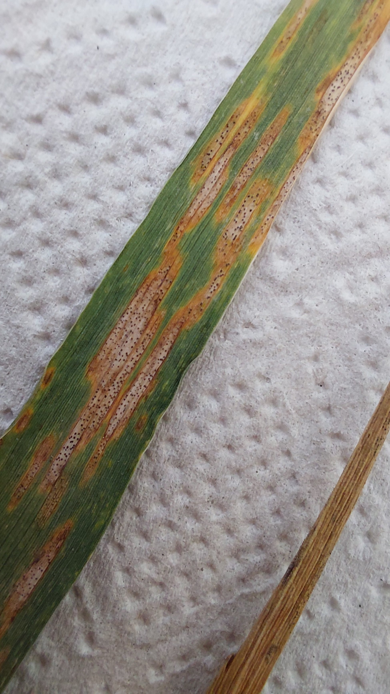
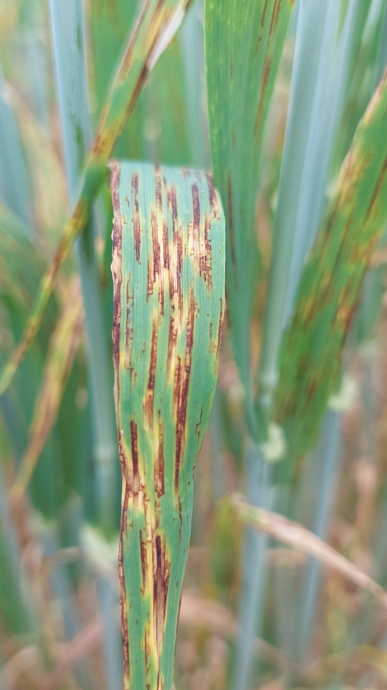

Igal aastal korjab Maaelu Teadmuskeskuse meeskond Eesti teravilja põldudelt helelaiksuse ja võrklaiksuse kahjustusega lehti. Meie eesmärk on hinnata, kuidas haigust tekitavad seened erinevaid taimekaitsevahendeid taluvad ja kuidas see omadus ajas muutub. Mida suurem on taluvus teatud fungitsiidi suhtes, seda suurem on oht, et toimeaine muutub taimekaitses väheefektiivseks ning tuleb vahetada mõnda teise toimeaine gruppi kuuluva fungitsiidi vastu.
Haigussümptomitega lehti uuritakse laboris. Lehtedest eraldatakse elusad haigustekitajad ning uuritakse katseliselt kui kanget fungitsiidilahust erinevatelt lehtedelt pärit seened taluvad. Fungitsiidi taluvust tähistab numbriline väärtus - EC50. EC50 näitab, millise kanguse juures pooled haigustekitaja rakud hävivad. Mida suurem on EC50, seda vähem efektiivne on uuritav fungitsiid. Kokku hindasime kahe haigustekitaja: Zymoseptoria tritici (helelaiksus) ja Pyrenophora teres f. teres (võrklaiksus) taluvust 8 erineva toimeaine suhtes. Haigust, toimeainet ja uuringuaastat saab valida lehe parempoolselt paneelilt.
Jagasime EC50 väärtused kolme gruppi:
Kaardile on märgitud kõige kõrgema EC50 väärtusega haigustekitaja, mis antud põllult tuvastati.
Antud kaart näitab toimeainete taluvuse ajalist muutust ja on abiks fungitsiidi preparaadi valikul.
NB. Koordinaatides võib esineda ebatäpsusi.
Küsimused või tagasiside? Võtke meiega ühendust: liis.andresen@metk.agri.ee


Vasakul: helelaiksuse kahjustus, paremal: võrklaiksuse kahjustus (Fotod: Regina Pütsepp)